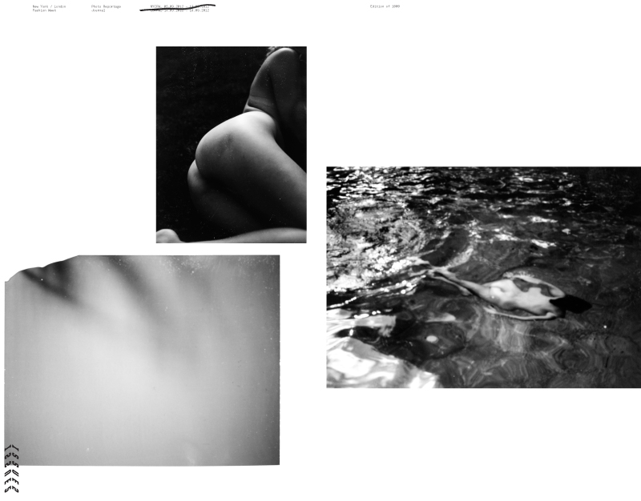
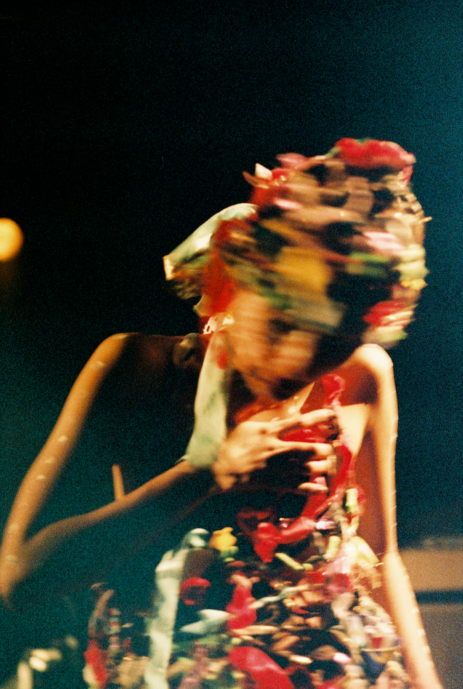
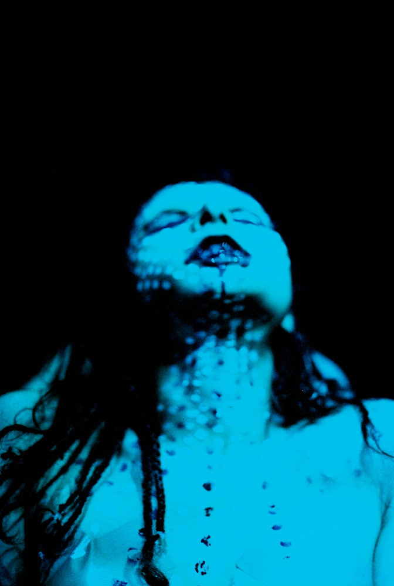
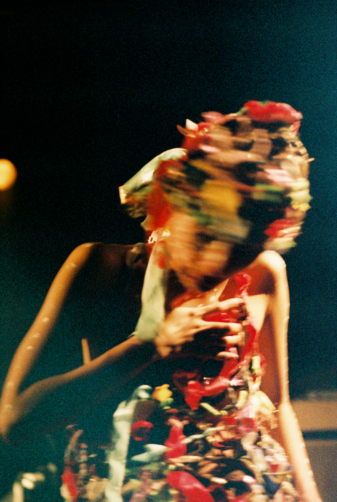
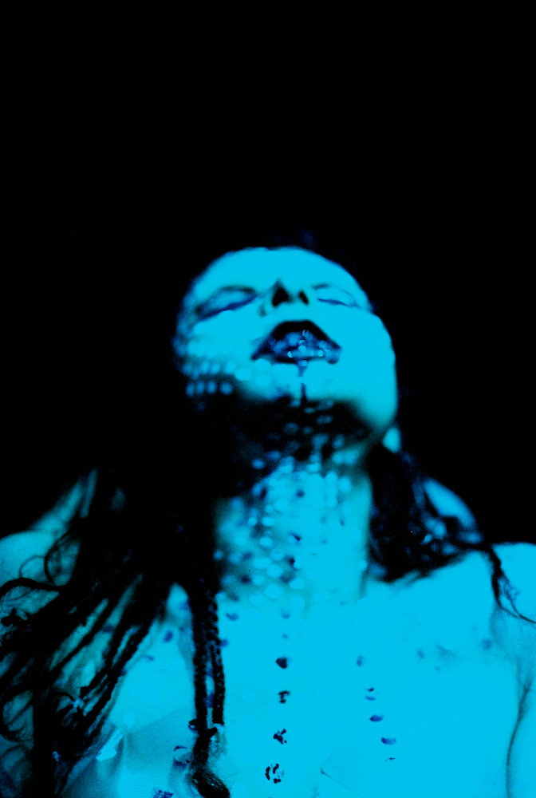

Living
and working in New York
on Domino
Me during my square period, 2011.
T : L : D : R
Building products & solving problems. Currently accepting new friendships.
Twitter. Arena. Email.
0 : 0 : 1
There's no one word I can use to explain what I do which is why you're reading this meandering biography. Currently, most of my day centers on product design, systems design and company building (i.e. solving problems & trying to make shit work)
3 : 3 : 1
Roadtrip is an interview magazine by Domino. The participants themselves choose the questions and decide who answers them. It's a small luxury to create a project designed to spiral out of control in a world of nanoscale precision and quantitative everything.
1 : 5 : 1
Latitude Zero was a single issue travel magazine that emphasized the journey over the destination. Originally pitched to Airbnb, we made it our own & distributed it directly to travelers at various points of departure throughout New York City.
It was a lot of fun.
1 : 3 : 2
VOID was a black and white newsprint magazine featuring photos shot during & around New York Fashion Week, distributed to guests at the Ace Hotel. It was an antidote to the booooooooring photos you see plastered everywhere else and an excuse to do something different.
Design: James Kape & Briton Smith. Art Direction: Joshua Gurrie & Rob Meyers



1 : 2 : 1
"Fashion Week" was an intermittent 4 year project to build a surreal narrative disassociated from the event itself. Why yes, it was the inspiration for creating VOID! Look at you connecting the dots!
1 : 1 : 1
"On Tour" is a chronicle of the numerous music festivals I toured with around Australia at the beginning of my photography career.
1 : 0 : 1
Portrait Study After Schiele

0 : 0 : 0
Errata
Published in
Design Genius (lol)
Vice Photo Annual 2011
Monster Children Photo Annual 2011
Dazed & Confused
Self-Titled
Dossier
Spook
Intersection
NY Mag
Sydney Morning Herald
Japan Times
& a bunch of others I've forgotten
0 : 0 : 0
Errata
Exhibitions
Outlet Gallery NY
Monster Children Gallery Sydney
Alaska Projects Sydney
Poppositions Brussels
Some gallery somewhere in France
 


